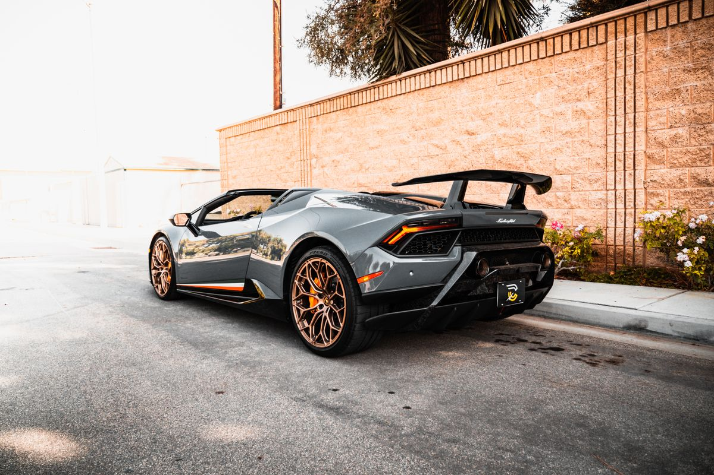
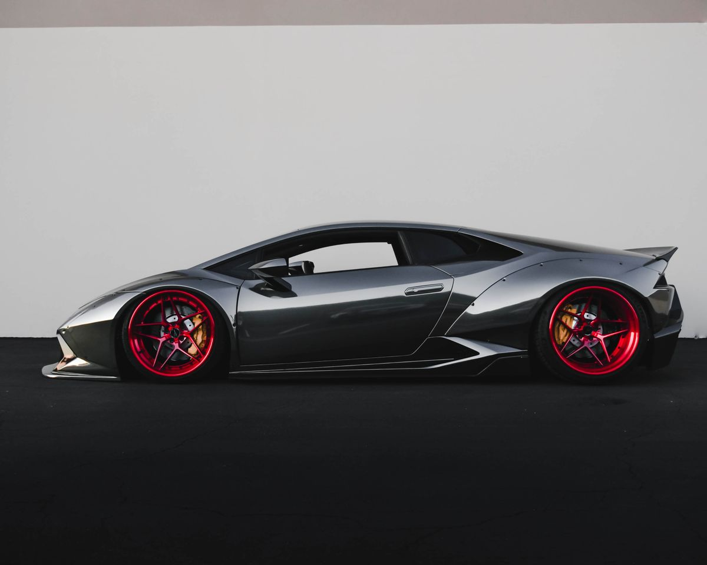
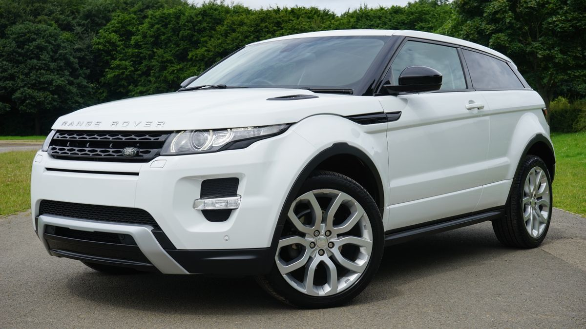
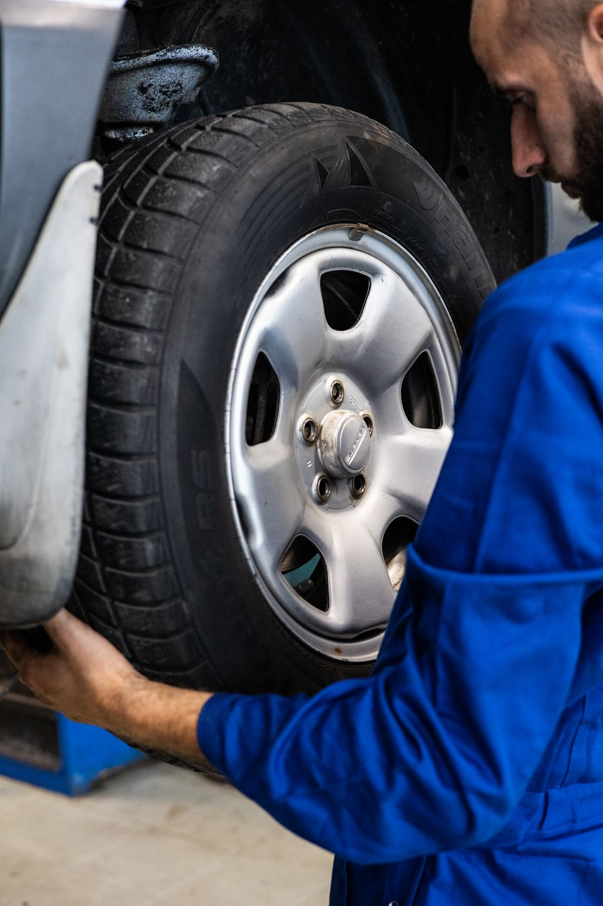
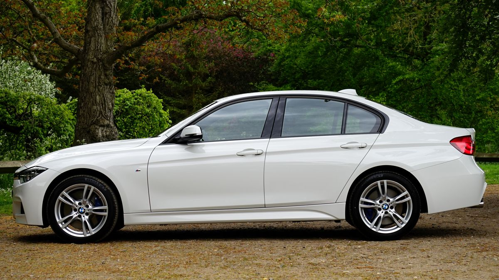
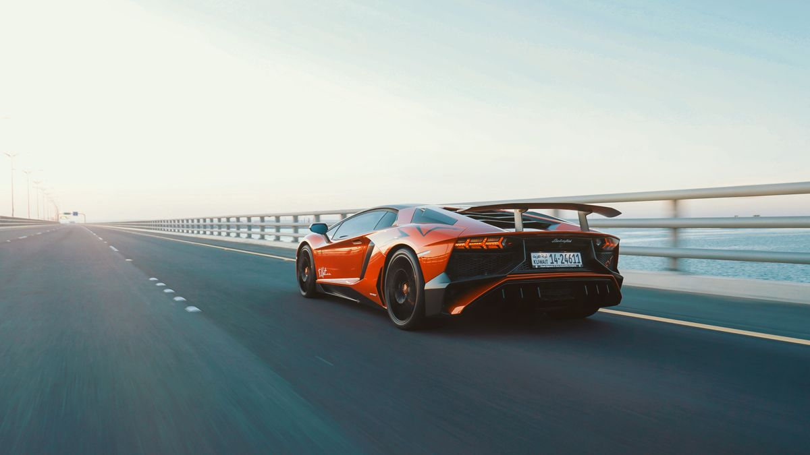
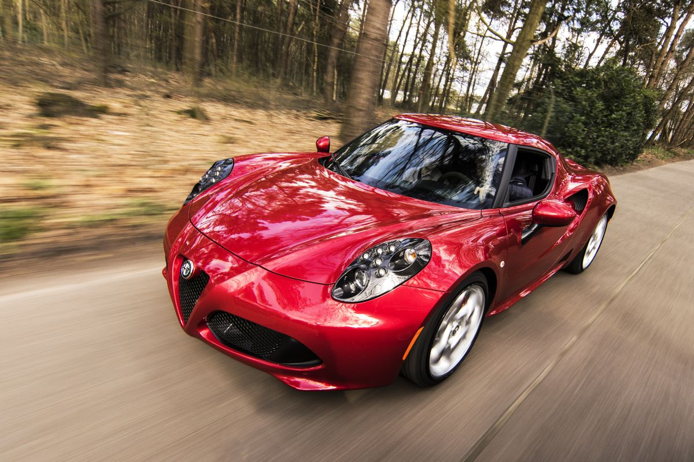
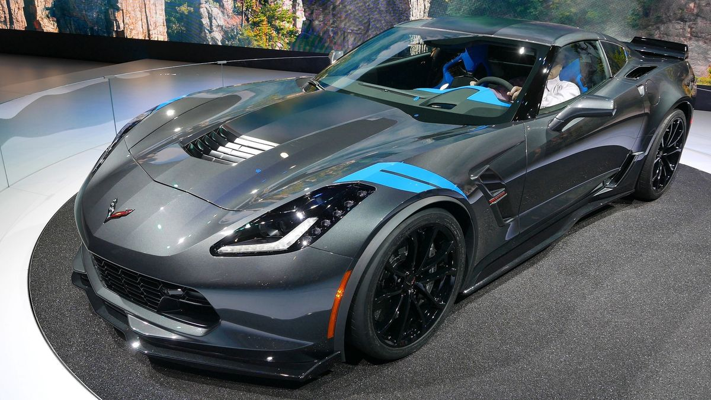
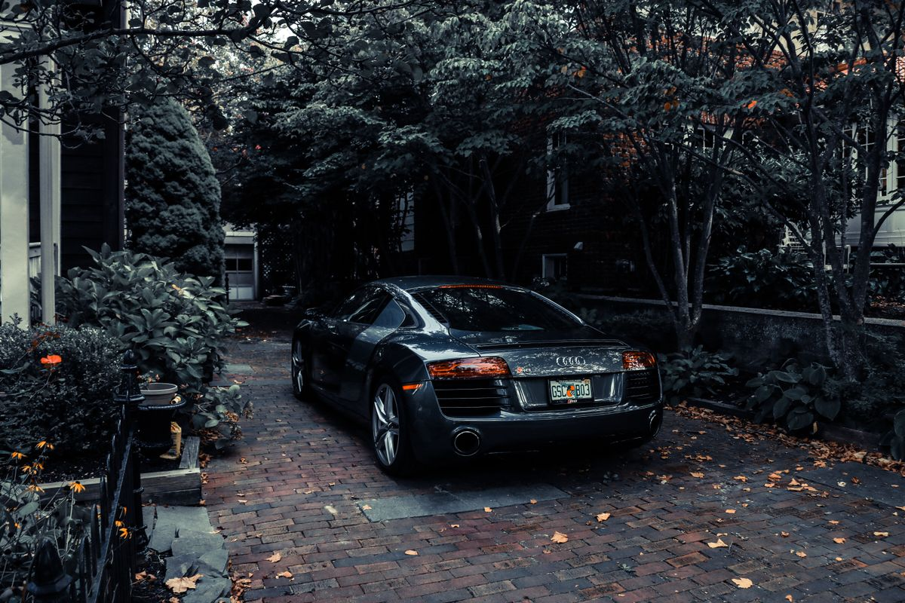

نصب سیستم پنوماتیک
اجرای کامل سیستم تعلیق بادی روی خودرو؛ از نصب کیسههای بادی و شیرها تا کمپرسور و مخزن هوا — همهچیز در یک نوبت نصب انجام میشود.
اتوبلک تهران خدمات فنی نصب پنوماتیک خودرو (سیستم تعلیق بادی) است؛ نماینده اولین و برترین گروه پنوماتیک در کشور. برای نصب پنوماتیک روی خودروی خود، فرم همین صفحه را پر کنید یا مستقیم در واتساپ پیام بدهید.

تخصص اتوبلک تهران اجرا و نصب پنوماتیک خودرو است؛ سیستم تعلیق بادی که ارتفاع خودرو را قابل تنظیم میکند. برای اطلاع از نوع سیستم مناسب خودروی خود، فرم همین صفحه را پر کنید یا در واتساپ پیام بدهید.

اجرای کامل سیستم تعلیق بادی روی خودرو؛ از نصب کیسههای بادی و شیرها تا کمپرسور و مخزن هوا — همهچیز در یک نوبت نصب انجام میشود.
با سیستم بادی، ارتفاع خودرو قابل تنظیم است؛ پایینتر برای استایل، بالاتر برای عبور از دستانداز و سرعتگیر — هر وقت که بخواهید.

سیستم پنوماتیک برای سواری و شاسیبلند قابل اجراست؛ نوع سیستم و قطعات، متناسب با مدل خودروی شما انتخاب میشود.

بررسی نشتی هوا، کمپرسور و اتصالات سیستم پنوماتیک؛ اگر سیستم بادی خودرویتان درست کار نمیکند، برای بررسی پیام بدهید.

پس از نصب، ارتفاع و تراز خودرو بازبینی و تنظیم میشود تا سیستم بادی همانطور که باید کار کند.

پیش از نصب، نوع سیستم مناسب خودروی شما بررسی میشود؛ مدل خودرو را در فرم بنویسید یا در واتساپ بپرسید.

اتوبلک تهران فقط یک کار میکند: اجرا و نصب پنوماتیک خودرو — و همین تمرکز، کار را تخصصی نگه میدارد.
اتوبلک تهران نماینده اولین و برترین گروه پنوماتیک در کشور است — شبکهای که نصب پنوماتیک را در تهران انجام میدهد.
وحید حسینی، مدیر اتوبلک تهران، مستقیم در واتساپ پاسخ میدهد؛ شماره ۰۹۱۲۰۷۱۵۵۰۷.
اینستاگرام @auto.black_penomatick1 با ۱۰۹٬۹۰۰ دنبالکننده و بیش از ۱٬۴۰۰ پست، هر روز نمونهکار تازه منتشر میکند.
کارگاه در نارمک، خیابان گلشندوست، لاین کندرو به سمت مدنی، پلاک ۲۹۱ است — برای بازدید و نصب، همانجا مراجعه کنید.
نمایی از خودروهای اسپرت با ارتفاع پایین — همان استایلی که سیستم تعلیق بادی به خودرو میدهد.




در فرم همین صفحه، مدل خودرو و نوع درخواست را ثبت کنید.
با شمارهای که ثبت کردهاید تماس میگیریم؛ نوع سیستم مناسب خودروی شما را بررسی میکنیم.
در نوبت هماهنگشده به کارگاه اتوبلک در نارمک، خیابان گلشندوست، پلاک ۲۹۱ مراجعه کنید.
سیستم پنوماتیک نصب و ارتفاع خودرو تنظیم میشود؛ خودرو را با سیستم بادی تحویل میگیرید.
پنوماتیک، سیستم تعلیق بادی است؛ بهجای فنر، کیسههای هوا ارتفاع خودرو را تنظیم میکنند و راننده میتواند ارتفاع را بالا یا پایین ببرد.
هزینه به مدل خودرو و نوع سیستم بستگی دارد؛ مدل خودروی خود را در واتساپ ۰۹۱۲۰۷۱۵۵۰۷ بفرستید تا بررسی و اعلام شود.
زمان نصب به مدل خودرو و نوع سیستم بستگی دارد؛ برای زمانبندی دقیق، در واتساپ یا تماس بپرسید.
فرم همین صفحه را پر کنید یا در واتساپ ۰۹۱۲۰۷۱۵۵۰۷ پیام بدهید؛ برای هماهنگی نوبت با شما تماس میگیریم.
تهران، نارمک، خیابان گلشندوست، لاین کندرو به سمت مدنی، پلاک ۲۹۱. پیش از مراجعه، برای اطمینان از نوبت تماس بگیرید.
فرم را پر کنید؛ برای مشاوره و هماهنگی نوبت نصب با شما تماس میگیریم. اگر ترجیح میدهید مستقیم صحبت کنیم، در واتساپ پیام بدهید:
۰۹۱۲۰۷۱۵۵۰۷ واتساپ: ۰۹۱۲۰۷۱۵۵۰۷ اینستاگرام: @auto.black_penomatick1 کانال تلگرام: اتوبلک تهران